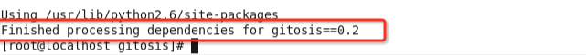
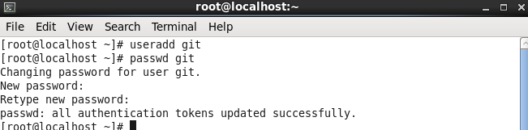

您现在的位置是：首页>Git专题
Git服务器端配置文档
Git是一个开源的分布式版本控制系统，用以有效、高速的处理从很小到非常大的项目版本管理。
分布式相比于集中式的最大区别在于开发者可以提交到本地，每个开发者通过克隆（git clone），在本地机器上拷贝一个完整的Git仓库。
从一般开发者的角度
1、从服务器上克隆完整的Git仓库（包括代码和版本信息）到单机上。
2、在自己的机器上根据不同的开发目的，创建分支，修改代码。
3、在单机上自己创建的分支上提交代码。
4、在单机上合并分支。
5、把服务器上最新版的代码fetch下来，然后跟自己的主分支合并。
6、生成补丁（patch），把补丁发送给主开发者。
7、看主开发者的反馈，如果主开发者发现两个一般开发者之间有冲突（他们之间可以合作解决的冲突），就会要求他们先解决冲突，然后再由其中一个人提交。如果主开发者可以自己解决，或者没有冲突，就通过。
8、一般开发者之间解决冲突的方法，开发者之间可以使用pull 命令解决冲突，解决完冲突之后再向主开发者提交补丁。
从主开发者的角度（假设主开发者不用开发代码）看，git有以下功能：
1、查看邮件或者通过其它方式查看一般开发者的提交状态。
2、打上补丁，解决冲突（可以自己解决，也可以要求开发者之间解决以后再重新提交，如果是开源项目，还要决定哪些补丁有用，哪些不用）。
3、向公共服务器提交结果，然后通知所有开发人员。
操作文档
测试操作环境:
服务器端: Ubuntu 14.04 LTS 虚拟机
开发端: windows 7 , Mac OS X Yosemite
软件: git , SourceTree
操作步骤:
搭建git服务器
一.配置SSH无密码登陆
1、安装OpenSSH
(1)通过命令安装SSH服务。(ssh服务:数据加密协议)
sudo apt-get install openssh-server
(2)检测ssh服务是否启动
netstat -an |more
查询是否存在Local Address:0.0.0.0:22端口 存在即启动
2、创建一个git用户，用来运行git服务
sudo adduser git
填写密码和账户信息
3、配置无密码SSH证书登录
在服务器端home/git文件中创建.ssh文件(.ssh为隐藏文件)
mkdir .ssh
然后再.ssh文件中创建authorized_keys文件
touch authorized_keys
收集所有需要登录的开发者的公钥id_rsa.pub文件，把所有公钥导入到/home/git/.ssh/authorized_keys文件里
测试操作(Mac OS):
(1)在开发机上使用命令生成密钥
ssh-keygen -t rsa
成功后会在用户目录生成.ssh文件(.ssh为隐藏文件)
.ssh文件中可以看到id_rsa和id_rsa.pub两个文件.
id_rsa.pub为公钥文件
(2)通过scp发送到服务器或者邮箱直接发给管理员
scp /Users/Jack/.ssh/id_rsa.pub git@192.168.10.86:/home/git/.ssh
(3)服务器端将开发机拷贝过来的公钥id_rsa.pub的内容追加到authroized_keys中并删除id_rsa.pub文件
cat /home/git/.ssh/id_rsa.pub >>/home/git/.ssh/authorized_keys
rm -rf id_rsa.pub
二.禁用shell登录
使用ssh的方式来访问,意味者，访问者具有权限可以ssh登陆到服务器上
出于安全考虑，第一步创建的git用户不允许登录shell
编辑/etc/passwd文件完成git用户不允许登录shell
找到
git:x:1001:1001:git,git,git,git,git:/home/git:/bin/bash
改为
git:x:1001:1001:git,git,git,git,git:/home/git:/usr/bin/git-shell
(文件只读需修改权限:http://jingyan.baidu.com/article/454316ab753a1cf7a6c03a75.html)
三.搭建git服务器
1.在服务器端安装git
首先需要修改git权限在system Setting—User Accounts—选择git用户 点击右上见Unlock 在Account Type中修改为Administrator
2.重启Terminal 进入git用户 安装git
先升级:sudo apt-get update
sudo apt-get install git-core
git --version确定成功
四.创建开发仓库
1.建立git仓库的存储目录
mkdir repository
2.始化服务器端仓库
git --bare init /home/git/repository/myRepository.git
五:克隆远程仓库
开发机器需要安装git
然后通过git clone命令克隆远程仓库
git@192.168.10.86:/home/git/repository/myRepository.git
测试操作环境: 服务器端: CentOS 6.7 虚拟机 开发端: windows 7 , Mac OS X Yosemite 软件: git , SourceTree
一.git安装
1.依赖环境和库
yum install curl-devel expat-devel gettext-devel openssl-devel zlib-devel perl-devel gcc gcc-c++ -y
git包
wget https://www.kernel.org/pub/software/scm/git/git-2.0.0.tar.gz
解压安装(需要在root下进行)
tar zxvf git-2.0.0.tar.gz
cd git-2.0.0
make prefix=/usr/local all
make prefix=/usr/local install
查看版本号：git --version 看是否安装成功
二.安装gitosis
gitosis为Git用户权限管理系统,通过管理服务端的/home/git/.ssh/authorized_key文件来执行对用户权限的管理，是一个python模块包
yum install python python-setuptools
git clone git://github.com/res0nat0r/gitosis.git
cd gitosis/
python setup.py install
显示Finished processing dependencies for gitosis==0.2即表示成功

三.安装ssh
1.安装ssh
yum install openssh-server
检测ssh服务是否启动
netstat -an |more
查询是否存在Local Address:0.0.0.0:22端口
chkconfig --list sshd 检查SSHD是否在本运行级别下设置为开机启动
chkconfig --level 2345 sshd on 如果没设置启动就设置下.
service sshd restart 重新启动
netstat -antp |grep sshd 看是否启动了22端口.确认下.
iptables -nL 看看是否放行了22口.
setup---->防火墙设置 如果没放行就设置放行.
2.创建一个git用户，用来运行git服务
useradd git 设置用户
passwd git 设置密码
提示输入新密码,输入密码

3、配置无密码SSH证书登录
在服务器端home/git文件中创建.ssh文件(.ssh为隐藏文件)
mkdir .ssh
然后再.ssh文件中创建authorized_keys文件
touch authorized_keys
收集所有需要登录的开发者的公钥id_rsa.pub文件，把所有公钥导入到/home/git/.ssh/authorized_keys文件里
(用户可以通过scp scp /Users/Jack/.ssh/id_rsa.pub git@192.168.10.86:/home/git/.ssh)
服务器端将开发机拷贝过来的公钥id_rsa.pub的内容追加到authroized_keys中并删除id_rsa.pub文件
cat /home/git/.ssh/id_rsa.pub >>/home/git/.ssh/authorized_keys
rm -rf id_rsa.pub
ps:报错
@@@@@@@@@@@@@@@@@@@@@@@@@@@@@@@@@@@@@@@@@@@@@@@@@@@@@@@@@@@
@ WARNING: REMOTE HOST IDENTIFICATION HAS CHANGED! @
@@@@@@@@@@@@@@@@@@@@@@@@@@@@@@@@@@@@@@@@@@@@@@@@@@@@@@@@@@@
解决方法:
rm -rf ~/.ssh/known_hosts
四.创建开发仓库
1建立git仓库的存储目录
mkdir repository
2始化服务器端仓库
git --bare init /home/git/repository/myRepository.git
四:克隆远程仓库
开发机器需要安装git
然后通过git clone命令克隆远程仓库
git@192.168.10.163:/home/git/repository/myRepository.git
附加1:给用户git设置 root权限
1）进入超级用户模式。也就是输入"su root",系统会让你输入超级用户密码，输入密码后就进入了超级用户模式。（当然，你也可以直接用root用）
2）添加文件的写权限。也就是输入命令"chmod u+w /etc/sudoers"。
3）编辑/etc/sudoers文件:输入命令"vim /etc/sudoers",点击，找到这一 行："root ALL=(ALL) ALL"在起下面添加"git ALL=(ALL) ALL"(这里的git是你的用户名)，然后保存（就是先按一 下Esc键，然后输入":wq"）退出。
不行就强写:wq!

4）撤销文件的写权限。也就是输入命令"chmod u-w /etc/sudoers"
重启终端
ps:这里说下你可以sudoers添加下面四行中任意一条
youuser ALL=(ALL) ALL
%youuser ALL=(ALL) ALL
youuser ALL=(ALL) NOPASSWD: ALL
%youuser ALL=(ALL) NOPASSWD: ALL
第一行:允许用户youuser执行sudo命令(需要输入密码).
第二行:允许用户组youuser里面的用户执行sudo命令(需要输入密码).
第三行:允许用户youuser执行sudo命令,并且在执行的时候不输入密码.
第四行:允许用户组youuser里面的用户执行sudo命令,并且在执行的时候不输入密码.
附加2:禁用shell登录
使用ssh的方式来访问,意味者，访问者具有权限可以ssh登陆到服务器上
出于安全考虑，第一步创建的git用户不允许登录shell
编辑/etc/passwd文件完成git用户不允许登录shell
1）进入超级用户模式。也就是输入"su root",输入密码
2）添加文件的写权限。也就是输入命令"chmod u+w /etc/passwd"。
3）编辑/etc/sudoers文件:输入命令"vim /etc/passwd",回车
找到
git:x:501:501::/home/git:/bin//bash
改为
git:x:501:501::/home/git:/usr/bin/git-shell
保存（就是先按一 下Esc键，然后输入":wq"）退出。
不行就强写:wq!

4）撤销文件的写权限。也就是输入命令"chmod u-w /etc/passwd"
写博文不易,转载请注明:
本文作者:Jack Jia
微博: 筑梦小丑_Dream
博客地址http://blog.csdn.net/jackjia2015